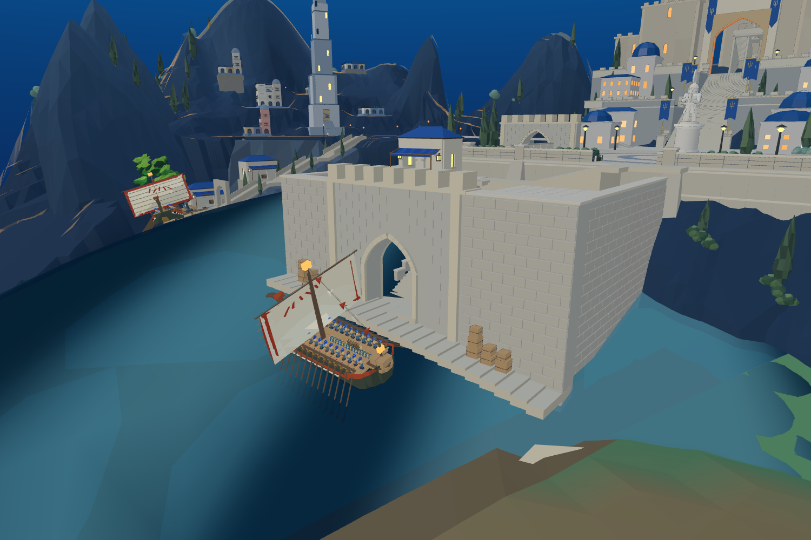
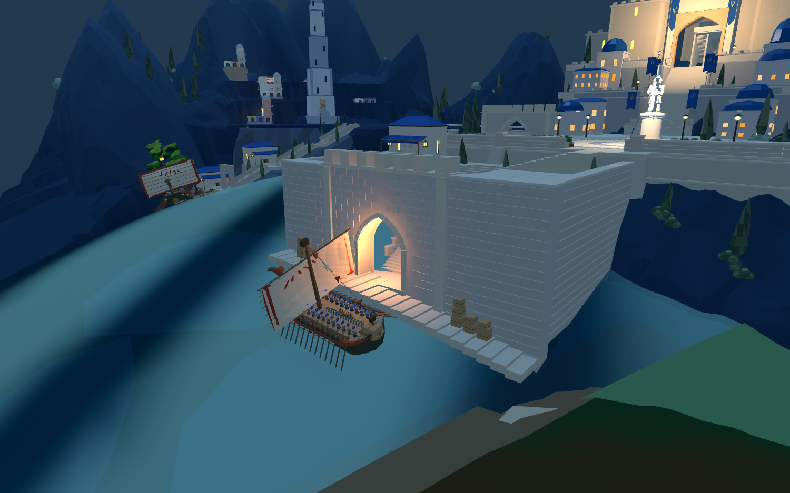

8931原游戏及同一Godot普通圣城已加载14只原港口木箱。门洞两侧各三列，沿球面码头分阶落地。保留中央7米区域与临水1.2米通道；木箱不放在雕像广场。



模型来源：原src/assets/harbor.js的createCrate。14只箱体边界均在墙外且不侵入预留通道；当前静止原船与新增货物/岸墙/海床检查通过，巡航更新无漂移。Godot实际加载14只并保存截图。
未完成：实际搬运装卸、跳板、连续靠泊和上下船。原旧港物流依赖旧港口与护城河路径，尚未迁移；不会因摆放箱子改变船上货物计数。前港体量、整体美术仍未达到目标。下一轮周边3/5为转折平台及码头摊位，保持路线净空。